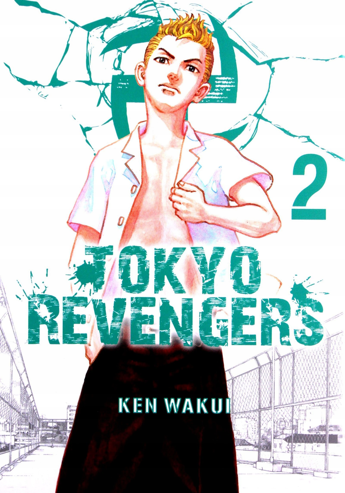

Токийские мстители
Читать
Токийские мстители
Tokyo revenger
26-летний неудачник Такэмити узнаёт, что единственная девушка, которая с ним встречалась, погибла в ходе разборок банды «Токийская свастика». В тот же день его толкают под поезд, и он перемещается на 12 лет назад во времена средней школы. Он решает изменить будущее, дабы спасти жизнь девушки и других друзей
Манга, созданная Кэном Вакуи. Публиковалась с марта 2017 года по январь 2023 года